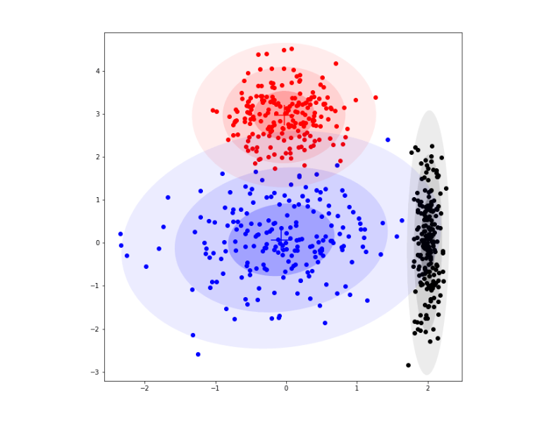

ภาพด้านบนคือภาพของการจัดกลุ่มข้อมูล (Clustering) จัดเป็นการเรียนรู้แบบไม่มีผู้สอน (unsupervised Learning) ซึ่งหมายถึง การเรียนรู้จากข้อมูลตัวอย่างที่ไม่มีการกำหนดค่าเป้าหมาย (Target) หรือ ฉลาก (Label) ของคลาส (Class) โดยใช้แบบจำลองเกาส์แบบผสม (Gaussian Mixture Model: GMM) ในการจัดกลุ่มจะใช้ฟังก์ชันการแจกแจงแบบปกติหลายตัวแปรจำนวนเท่ากับจำนวนกลุ่มที่ต้องการจัด หรือ อาจใช้จำนวนฟังก์ชันการแจกแจงมากกว่าจำนวนกลุ่มแล้วทำการรวม (Merge) หรือลดทอน (Prune) ในภายหลังก็ได้ โดยแต่ละฟังก์ชันการแจกแจงแบบปกติหลายตัวแหร จะถูกถ่วงน้ำหนักและถูกนำมารวมกันว่า GMM
ในภาพนี้จะเห็นได้ว่าแตกต่างจากรูปแรกโดยจะมีการจัดกลุ่มที่ชัดเจนมากจนเห็นเป็นรูปทรงของกลุ่มข้อมูลนั้นๆ เนื่องจาก GMM จะค่อยๆปรับจุดกึ่งกลางและทำการจัดกลุ่มที่เกี่ยวข้องกัน สำหรับการประยุกต์ใช้ GMM เพื่อการจัดกลุ่มจำนวนส่วนผสมของแบบจำลองจะถูกกำหนดให้มีค่าเท่ากับจำนวนกลุม่ที่ต้องการนั่นเอง
ใน workshop นี้จะเป็นการทดลองใช้บริการของ firebase ของ google บริการที่เลือกคือ label-images ใช้ Detect cat, dog, bird เมื่อทำการกดปุ่ม ML-KIT จะติดต่อไปยัง firebase ให้ทำการ Detect รูปแมวและให้ส่งคำตอบกลับมาแสดงบน text Area และ ปุ่มถัดมา MY FUNC เป็นการทดลองในรูปแบบเดียวกันแต่ในที่นี้จะทำการ upload function ขึ้นไปบน google function ซึ่งเป็นบริการของ google เช่นกัน ซึ่งก็พบว่าได้ผลลัพธิ์เหมือนกัน เผื่อในกรณีที่ต้องการ upload ML ที่ไม่มีบริการก็สามารถทำได้เช่นกัน

ทดลองใช้บริการ Amazon rekognition เป็น ML สำหรับ Face detection and analysis, Text detection, Celebrity recognition, Labels และอื่นๆ ซึ่งในรูปได้ทดลองใช้ในส่วนของ Face detection and analysis ถ้าสังเกตในภาพจะเห็นกรอบสีฟ้าหลักๆ 5 กรอบที่บอกตำแหน่งของใบหน้า ในส่วนนี้กรอบสีฟ้าจะค่อนข้างตรงกับใบหน้าทีเดียว และผลลัพธิ์ที่วิเคราะห์ใบหน้าออกมาก็ค่อนข้างตรงทีเดียว

การทดลองในภาพสร้างจาก Library tensorflow 1.15.0 ใช้ตัว pre-train model VGG-19 ในการ process image ซึ่งเป็นการรวมภาพ content image และ style image ออกมาเป็น output อย่างที่แสดงอยู่ในรูป จากการทดลองการเลือก style image ที่มี texture หรือลวดลายเยอะแบบ อ.ถวัลย์ ดัชนี จะได้ผลลัพธิ์ที่น่าประทับใจมากกว่า
numpy เป็น Library หลักสำหรับการคำนวณทางวิทยาศาสตร์ใน Python โดย numpy มีอาร์เรย์ที่มีประสิทธิภาพสูง (สามารถคำนวณได้อย่างรวดเร็ว) และ Tool สำหรับการทำงานร่วมกับอาร์เรย์เหล่านั้น
SciPy มีฟังก์ชันพื้นฐานในการทำงานร่วมกับภาพ ตัวอย่างเช่นมีฟังก์ชัการอ่านภาพจาก Disk ลงใน numpy Array หรือ การเขียนอาร์เรย์ numpy ไปยัง Disk เป็นภาพและปรับขนาดภาพ
Tensorflow เป็นเครื่องมือสำหรับ machine learning และฟังก์ชันส่วนใหญ่นั้นหลักๆจะสร้างมาเพื่อ deep neural network model
Keras เป็น high-level neural networks API, เขียนบน Python และ ทำงานร่วมกับ TensorFlow, CNTK และ Theano
Pandas เป็น open source เป็น Library ที่มีประสิทธิภาพสูง ใช้งานง่าย เกี่ยวกับ data structures, และ data analysis สำหรับภาษา Python
scikit-learn สร้างมาเพื่อทำงาน machine learning สร้างขึ้นบน SciPy